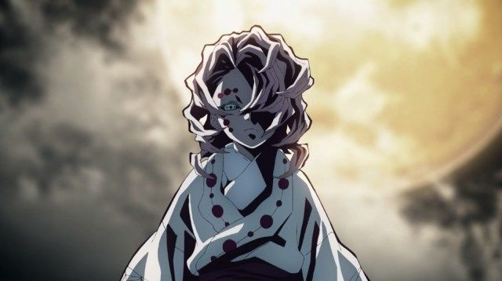

The story takes place in Taishō-era Japan.
It follows protagonist Tanjiro Kamado and his
sister Nezuko Kamado as they seek for a cure to
Nezuko's demon curse. Tanjiro and Nezuko become
entangled in the affairs of a secret society, known
as the Demon Slayer Corps, that have been waging a
secret war against demons for centuries. The demons
are former humans who sold their humanity in exchange
for power, they feed on humans and possess super natural
abilities such as super strength, magic and regeneration.
Demons can only be killed if they're decapitated with
weapons crafted from an alloy known as Sun Steel, injected with poison extracted from wisteria flowers, or exposed to sunlight. The Demon Slayers, on the other hand, are entirely human, however, they employ special breathing techniques, known as breaths, which grant them superhuman strength and increased resistance.
Demons
Demons (鬼 Oni) are a race of monstrous, immortal and malevolent beings and one of the major antagonists of the series.
Most Demons possess a murderous instinct to kill and devour humans, and have lost most of their memories from their human life. Demons however do still retain their original personality, except it often turns into a twisted, dark version of what it used to be. However, there are a few Demons who have completely retained their human emotions and memories, such as Nezuko Kamado, Tamayo and Yushiro.

Demons possess eternal youth and can live for centuries, sometimes even longer if they're incredibly strong. They can't die through conventional means, but can be killed by sunlight or with one of the Demon Slayer Corps' special Nichirin Blades.
Demons have a strong regenerative ability more than any living being or human, able to heal any sort of injury caused by a conventional mean in mere seconds. That includes regrowing limbs and organs.
The strength of a specific Demon depends almost entirely on how many humans they have eaten, and they can also grow stronger by receiving additional blood from Muzan, which is how the Twelve Kizuki gained their overwhelming power. Some Demons, however, have a limit to how much they can use to grow stronger, and they might be not compatible with a higher amount of Muzan's blood.
Demon Slayer Corps
The Demon Slayer Corps (鬼き殺さつ隊たい Kisatsutai) is an organization that has existed since ancient times, dedicating its existence to protecting humanity from Demons. There are hundreds of Demon Slayers within the organization, however they are not officially recognized by the government. With Muzan Kibutsuji's demise and the near-extinction of the Demon race, the Corps officially disbanded.